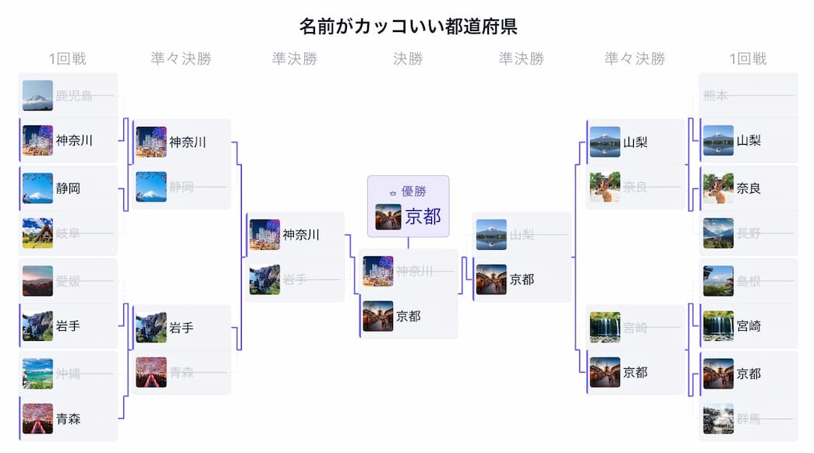
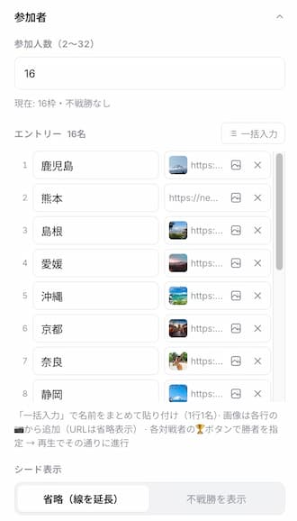
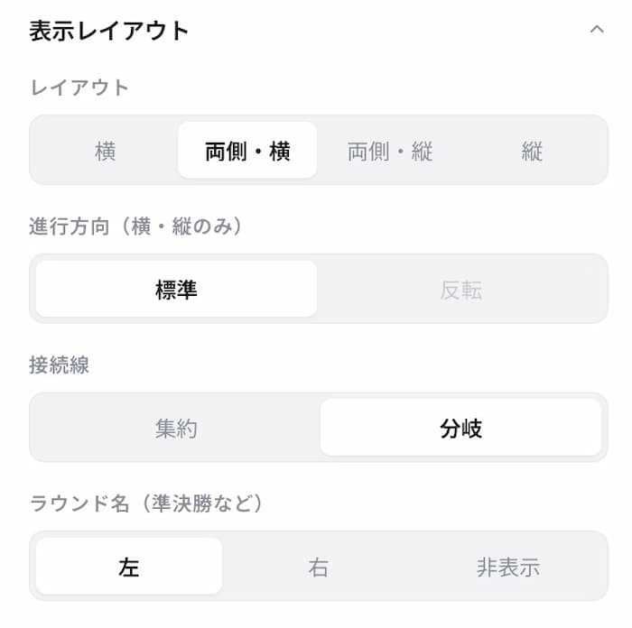
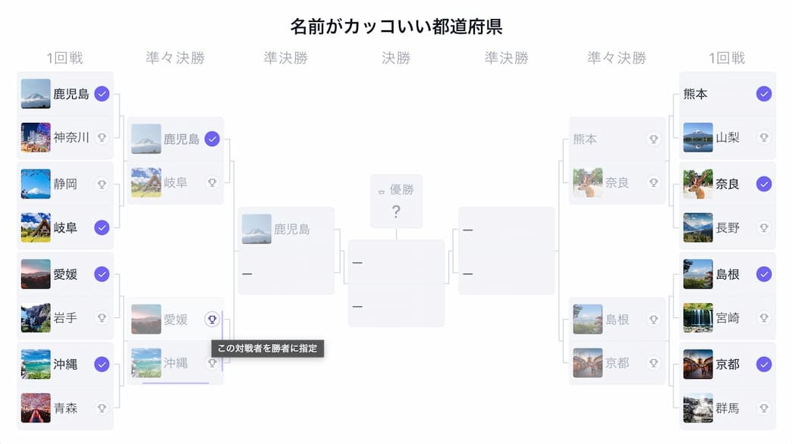
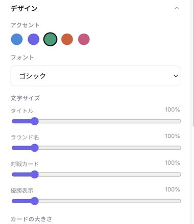

【無料】動くトーナメント表の作り方！トーナメント表アニメーターの使い方

大会の組み合わせ表を作ろうとして、Excelやパワーポイントでの罫線調整に手間取ったことはありませんか。
トーナメント表アニメーターは、参加者名を入力するだけで、1回戦から決勝までの勝ち上がりがアニメーションで進む動くトーナメント表を作れる無料ツールです。参加者ごとに画像を設定したり、配色やフォントを変えたりと、見た目を細かくカスタマイズできるのも特長です。
この記事では、登録不要ですぐに使える作成手順と、画像設定を含むカスタマイズ項目、見やすく仕上げるためのコツを、実際の画面とあわせて解説します。
トーナメント表アニメーターでできること
ブラウザで開くだけで使える、勝ち上がり演出つきのトーナメント表作成ツールです。主な特長は次のとおりです。
| 項目 | 内容 |
|---|---|
| 参加人数 | 2〜32名に対応。人数を選ぶだけで組み合わせを自動生成 |
| 組み合わせ方式 | バランス配置・ランダム・順序どおりから選択可能 |
| 勝者の決め方 | 対戦カードのクリック、またはスコア入力で自動判定。手動指定モードなら勝ち上がりを先に決めておくこともできる |
| 参加者の画像 | 各エントリーにアップロードまたはURL指定で画像を設定可能 |
| レイアウト・デザイン | 横／両側・横／両側・縦／縦の4種類のレイアウトに加え、配色・フォント・カードサイズなどを細かく調整可能 |
| 料金・利用条件 | インストール不要・登録不要・無料（商用利用可、クレジット表記にご協力ください） |
横にスクロールできます
- ブラウザだけで動作。インストール・会員登録は不要です
- 入力した名前や画像は外部に送信されません（すべてブラウザ内で処理）
- 設定はブラウザに自動保存され、次に開いたときに復元されます
- 動画としての書き出し機能はないため、画面録画で保存する前提のツールです
STEP1：参加人数と名前を入力する
ツールを開いたら、「参加者」パネルで参加人数（2〜32）を入力し、エントリー欄に参加者名を1行1名ずつ入力します。「一括入力」を使えば、Excelやメモ帳で作った名前リストをまとめて貼り付けることも可能です。
各エントリーの画像ボタンからは、ファイルのアップロードまたは画像URLの指定でアイコン画像を設定できます。都道府県名やチーム名にゆかりの画像を入れておくと、勝ち上がった参加者がひと目で分かるようになります。

参加人数が2の累乗にならない場合は、「シード表示」で不戦勝の扱いを選べます。詳しくは後述のコツで解説します。
STEP2：レイアウトと配色を選ぶ
「表示レイアウト」パネルで、横・両側/横・両側/縦・縦の4種類からレイアウトを選びます。人数が多い大会は「両側・横」で左右から中央に絞り込む構成にすると、決勝までの流れが見やすくなります。

「デザイン」パネルでは、アクセントカラー（5色）・カードの色・フォント（6種類）・文字サイズ・カードの大きさなどを調整できます。大会のテーマカラーやチームカラーに合わせて配色を選ぶと、対戦表全体に統一感が出ます。設定項目の詳細は、この後の「自由にカスタマイズできる項目」でまとめて紹介します。
STEP3：勝者を決めて再生する
各対戦カードをクリックすると、その場で勝者を指定できます。「勝者の決め方」を「手動で指定」にすると、対戦カードに🏆ボタンが表示され、決勝までの勝ち上がりを先にまとめて決めておくことも可能です（このボタンは再生中は表示されないため、録画には映りません）。

スコアをつけて勝敗を決めたい場合は、「スコア表示」を「スコア入力」に切り替えます。対戦カードに点数入力欄が現れるので、両者の得点を入力するだけで、点数の多い方が自動的に勝者と判定されます（🏆ボタンで手動指定した対戦カードがある場合は、そちらの指定が優先されます）。試合結果や得点を記録しながら勝ち上がりを反映したいときに便利です。
「再生」を押すと、決勝までの流れをアニメーションで通しで確認できます。スペースキーでも再生・一時停止でき、速度スライダーでエフェクトの速さも調整可能です。優勝者が決まると、中央の「優勝」カードに名前と画像が表示されます。
完成した対戦表は、PCやスマートフォンの画面録画機能で撮影すれば、そのまま配信やSNS投稿用の動画素材として使えます。
アカウント登録やアプリのインストールは一切不要。参加者名を入力するだけで、勝ち上がりアニメーション付きの対戦表が作成できます。
自由にカスタマイズできる項目
トーナメント表アニメーターは、初期設定のままでも十分見やすい対戦表になりますが、「デザイン」「カード」パネルには見た目を細かく調整できる項目が揃っています。ここでは主なカスタマイズ項目をまとめます。
画像・表示内容
- 参加者の画像：各エントリーの画像ボタンから、ファイルのアップロードまたはURL指定で設定。画像のないエントリーは名前のみで表示されます
- カードの表示内容：「画像＋名前」「画像のみ」「名前のみ」から選択可能
- 対戦カードのスタイル：対戦者どうしをつなげて見せる「連結」と、間隔を空ける「分離」から選択
配色・フォント
- アクセントカラー：5色のプリセットから選択。勝ち上がりのラインや優勝カードに反映されます
- カードの色：自動（背景テーマに合わせる）・ホワイト・ソフトグレー・クリーム・ラベンダーのプリセットに加え、カスタムカラーも指定可能
- フォント：ゴシック・丸ゴシック・ポップ・手書き風・明朝・等幅の6種類
- 角丸：角なし・標準・丸めの3段階
- キャンバスの背景：ライト・ソフト・ダークの3種類

サイズ・レイアウトの微調整
- 文字サイズ：タイトル・ラウンド名・対戦カード・優勝表示をそれぞれ60〜400%の範囲で個別に調整
- カードの大きさ：幅（80〜900px）・高さ（自動〜400px）をスライダーで調整。プレビュー上でカードの右端・下端を直接ドラッグしてサイズ変更することも可能（ダブルクリックで初期値に戻せます）
- 行の余白：コンパクト・標準・ゆったりの3段階
- 勝者ハイライトの見せ方：バー・塗り・枠から選択
- 順位番号・着順ラベル：表示・非表示を切り替え可能
- エフェクト：勝ち上がり時のアニメーションの強さを、なし・控えめ・標準・派手から選択
- カードにマウスを乗せて✎ボタンをクリックすると、その場で名前を編集できます
- 大会タイトルは、プレビュー上のタイトル部分をダブルクリックすると直接編集できます
- プレビューは画面サイズに自動でフィットするため、設定パネルを開いたままでも見やすく確認できます
見やすいトーナメント表に仕上げる3つのコツ
1. 参加人数に合わせてレイアウトを選ぶ
8〜16人程度なら「両側・横」で決勝を中央に置くと大会らしい見栄えになります。スマホ縦画面向けの動画にしたい場合は、「キャンバス」のアスペクト比を9:16に、表示レイアウトを「縦」に設定すると、画面に収まりやすくSNS投稿にも向いた形になります。
2. アクセントカラーは1色に絞る
勝ち上がりのラインや優勝カードに使うアクセントカラーは、5色のプリセットから1色を選ぶだけのシンプルな設計です。カードの色・フォントとあわせて大会のテーマカラーに寄せると、対戦表全体の統一感が出ます。
3. シード表示の扱いを大会形式に合わせる
参加人数が2の累乗（8人、16人など）にならない場合は「不戦勝を表示」に切り替えると、誰が1回戦を免除されたのかが一目で分かります。逆にシンプルに見せたいだけなら「省略（線を延長）」のままで問題ありません。
こんな場面で活用できます
参加者と画像を入れ替えるだけで、さまざまな場面の組み合わせ表として使い回せます。
| シーン | 使い方の例 |
|---|---|
| スポーツ・ゲーム大会 | eスポーツイベントや部活動の対戦表を作成し、勝ち上がりをその場で更新しながら進行・結果報告に使う |
| 配信・イベント企画 | ゲーム配信内の対戦企画や、コミュニティイベントの組み合わせを自動生成して配信画面に表示する |
| エンタメ・SNS投稿 | 「一番好きな○○は？」のようなお題に画像付きで勝ち抜き戦を作り、考察系コンテンツの図解として投稿する |
横にスクロールできます
よくある質問（FAQ）
トーナメント表アニメーターは無料ですか？商用利用もできますか？
無料で使えます。会員登録もインストールも不要で、動画への書き出しやSNS投稿を含む商用利用も可能です。事前連絡は不要ですが、クレジット表記にご協力をお願いしています。
参加人数の上限・下限はありますか？
2名から32名まで設定できます。2の累乗にならない人数（10人、20人など）でも、不戦勝（シード）を含めたトーナメント表が自動で組まれます。
参加者に画像を設定できますか？
できます。各エントリーの画像ボタンから、ファイルのアップロードまたは画像URLの指定で設定できます。カードの表示内容は「画像＋名前」「画像のみ」「名前のみ」から選べます。
入力したデータは外部に送信されますか？
送信されません。参加者名や画像を含め、処理はすべてブラウザの中で完結します。設定はブラウザに自動保存され、次に開いたときにそのまま復元されます。
完成したトーナメント表は動画として保存できますか？
ツール自体に動画の書き出し機能はないため、PCやスマートフォンの画面録画機能を使って「再生」中の画面を録画してください。録画した動画はそのまま配信やSNS投稿に使えます。
まとめ
動くトーナメント表は、対戦表を用意する手間と、結果発表の盛り上がりを両立できる形式です。プログラミングの知識がなくても、参加者名を入力してレイアウトを選ぶだけで、勝ち上がりがアニメーションで進む対戦表を無料で作成できます。
- 参加者名と画像を入力するだけで、1回戦から決勝までのトーナメント表が自動で組まれる
- 配色・フォント・カードサイズまで細かくカスタマイズ可能。大会のテーマに合わせて仕上げられる
- データはすべてブラウザ内で処理。保存も自動なので、途中で中断しても続きから作れる
次の大会や配信企画で組み合わせ表が必要になったら、まずは手元の参加者リストでどのような動きになるか試してみてください。